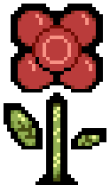
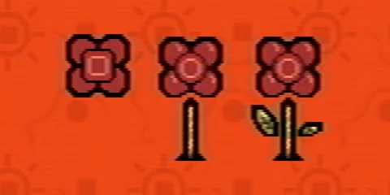

Randice
{kind=link}

{kind=link}
Fanmade recreated sprite
Randice is one of the Pets found in Even Care. Randice is a red flower. He is friends with Toneth and heavily relies on Wavey.
Pet description
Randice is a flower.
He does need water, but not as much as he thinks.
You shouldn't worry.
If you are considering Randice, you should adopt Wavey as well.
Wavey knows how to trick Randice.
History
{kind=link}

{kind=link}
Randice sprite development
Randice is first seen in a picture in Petscop 1 in the first room of Even Care:
It's a picture of two friends, Toneth and Randice.
Are they not cute? Give them a chance!
Randice is always seen with Wavey, in their room in Even Care.
At first, approaching Randice will cause him to retreat into the ground and warp to the adjacent plot of grass with Wavey in avoidance of the player. To cancel this action out and allow Randice's capture, the player must deprive him of Wavey's rain by pushing the nearby bucket underneath where Wavey is about to spawn so as to trap Wavey and his water, thus causing Randice to droop and stop avoiding the player. If the bucket is placed in the correct spot, a "clunk" noise will sound as Randice bumps into the bucket as he rises above ground with Wavey. The player can then catch him without issue by making physical contact with him.
Randice's description was shown in Petscop 19, during the "belle" recording
In development, shown in the Extra Stuff menu, Randice went from a complete flower head, to gaining a stem, then getting leaves.
Notes

{kind=link}
Randice and Wavey in Even Care
The two plots of earth in which Randice can spawn differ in depth, with one extending below the standard depth limit of the map's ground. This is the only known instance in all of Even Care in which this occurs. This is not seen in some older versions of the level.
Theories
Some speculate that Randice dies once he withers when deprived of water.
Randice could be loosely based on a rafflesia, a flower that smells like death, given the large indention in the middle of Randice's "face."
| People | Paul · Belle · Carrie · Marvin · Rainer · Anna · Mike · Lina · Jill · Daniel |
|---|---|
| Characters | Guardian · Amber · Pen · Randice · Roneth · Toneth · Wavey · Care · Tiara |